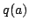
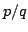
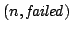

Usage
tryExpandFraction a
tryExpandFraction(a)(p,q)
Signature
tryExpandFraction: R (RX, RX)
| Parameter | Type | Description |
|---|---|---|
| a | R | the expansion point |
| p,q | RX | numerator and denominator of a rational function |
Returns
If  is a unit in R, then tryExpandFraction(a)(p,q) returnswhere
and the series expansion of  around a is
. In addition,
whenever
. Otherwise, it returns  where n is the order of p/q at .
See Also
expand,expandFraction